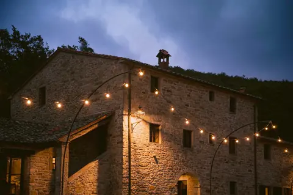
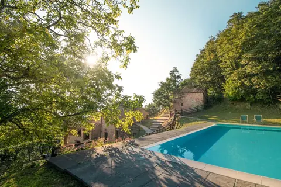

28–31 May 2027 at La Conca, Sansepolcro
Our wedding
Join us in Tuscany from Friday 28 to Monday 31 May to celebrate our wedding on Saturday 29 May 2027.
We want our wedding to feel relaxed and welcoming, with everyone included. We’re choosing generous food to share, and Joe’s request for the menu is tiramisu.
Arrivals
Settle into the villas ahead of the wedding
Our wedding
The ceremony and celebration at La Conca
A day at La Conca
Time to enjoy the villas and pools
Heading home
The end of our stay at the villas
The final programme, menus, ceremony time, check-in and check-out times, villa allocations and any shared transfers are still to be confirmed. We’ll add those details here and share your arrival instructions before you travel.
The setting
We’ve booked Villa Santarsa and Villa Vallorsaia at La Conca for our wedding celebrations.


Venue photographs from La Conca: Santarsa and Vallorsaia